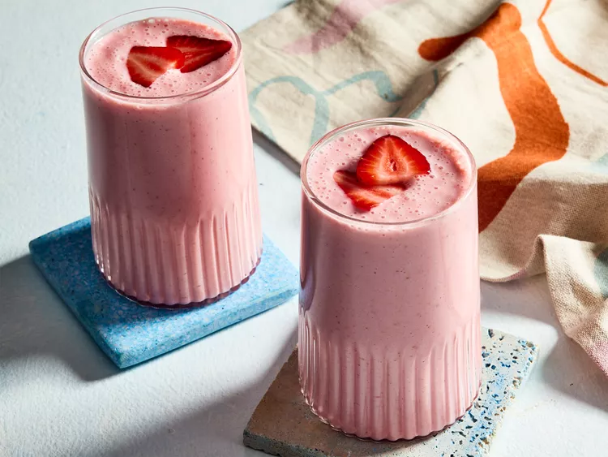

Fruit and Yogurt Smoothie
This yogurt smoothie recipe is delicious! You may substitute the strawberries for any other berries or fruit.

Ingredients
- 1 cup strawberries
- 1 banana
- ½ cup yogurt
- ¼ cup pineapple juice
- 1 ½ teaspoons white sugar
- 1 teaspoon orange juice
- 1 teaspoon milk
Directions
- Gather all ingredients.
- Combine strawberries, banana, yogurt, pineapple juice, sugar, orange juice, and milk in a blender.
- Blend until smooth.